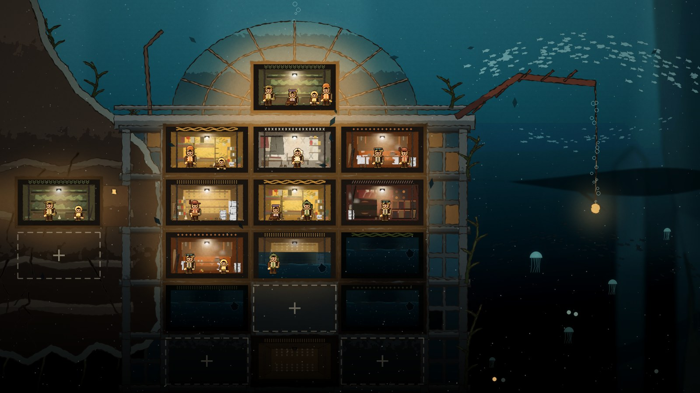
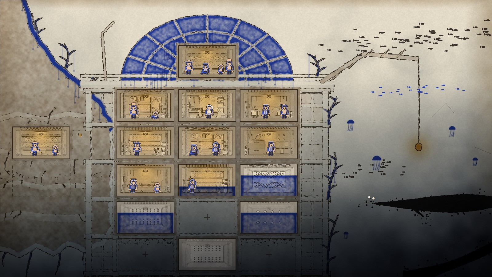
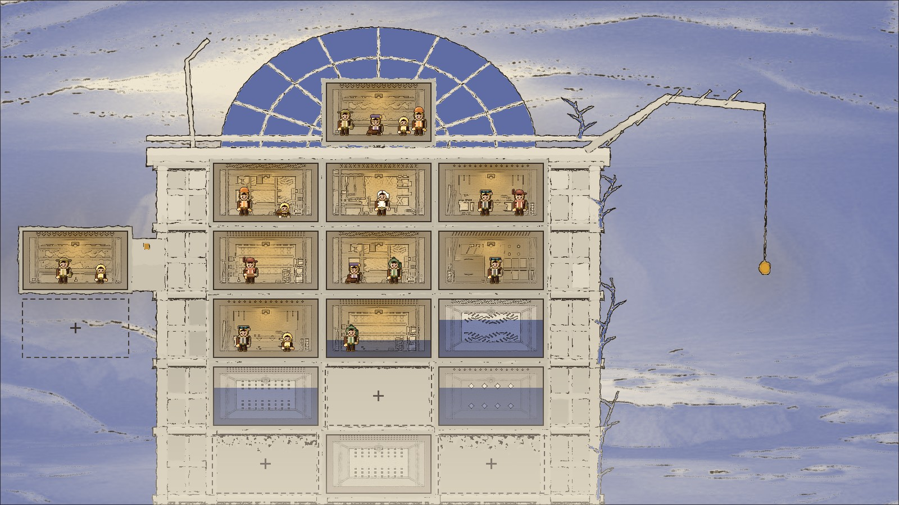
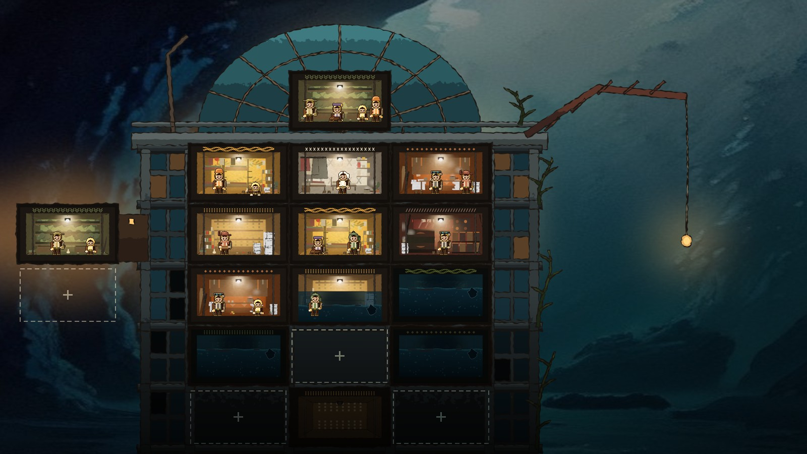
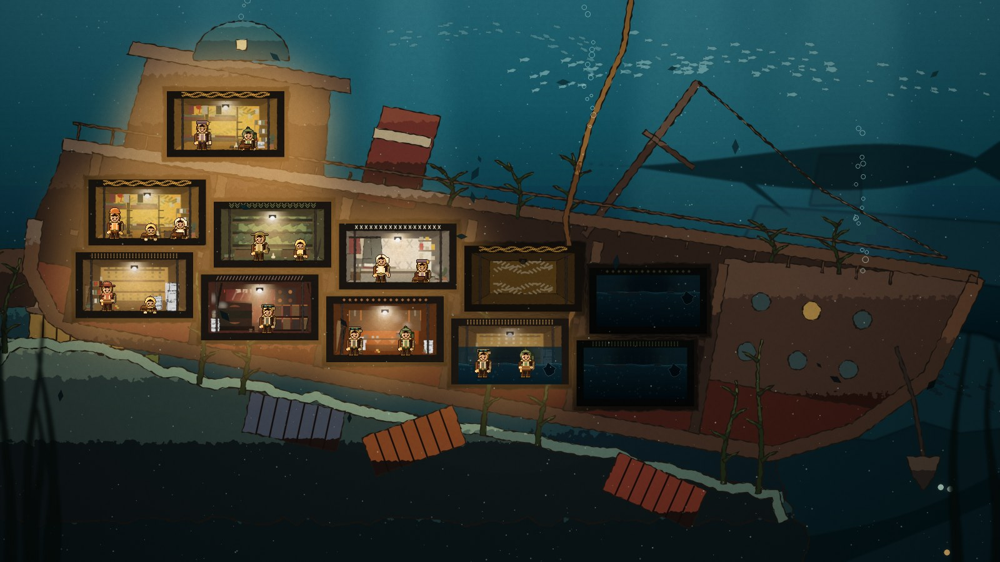
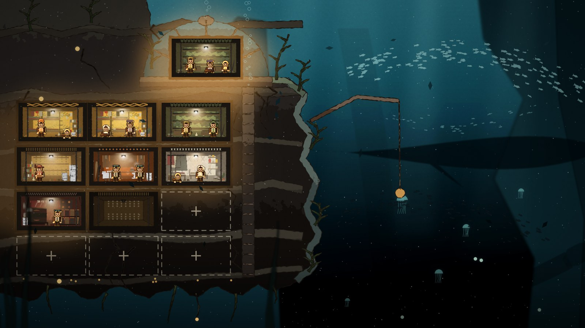
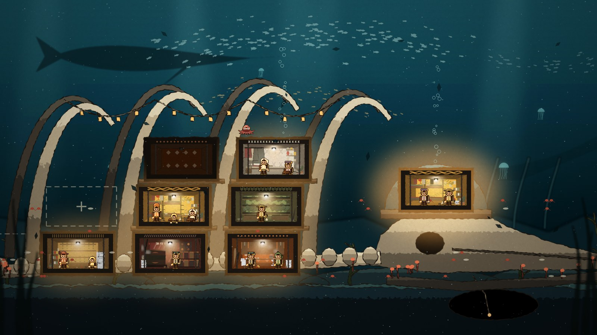
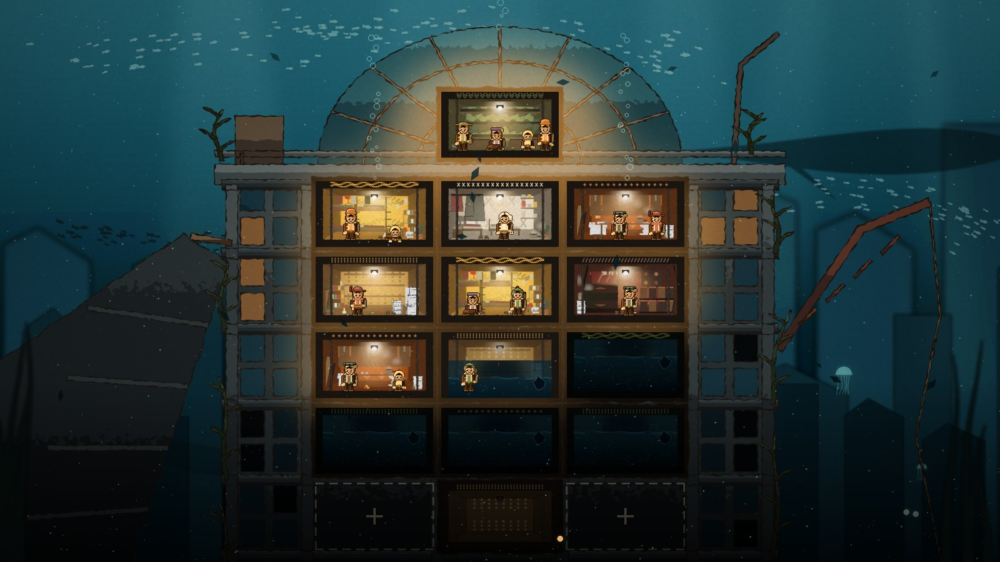

Dome Keeper + Fallout Shelter (M2 절벽 · M4 탑)
절벽 끝 홈에 기대 선 수몰 탑. 꼭대기 아트리움이 돔, 층을 따라 해구 위 어둠으로 내려간다. 바위를 판 굴 방이 탑과 이어지고, 오른쪽 심연에 유인 등불을 건다 — 위협은 그쪽에서만 온다.

사용자 레퍼런스(종이·먹선·단색 군청 번짐·금색 포인트) 화풍 시험
같은 M5 구도를 종이·먹·군청 하나·금색(등불에만)으로. 깊이는 검정이 아니라 짙어지는 먹물 담채, 생물은 먹 얼룩. 도트 주민 판정용 방 하나 2배 확대.


바깥(바다·절벽·먼 형체)만 flux(Pollinations) — 탑·방·도트 주민은 우리 것. 생성 AI 공개 대상
실패 기록. 시도 4회 가운데 한 장만 받았는데 종이·먹·번짐이 아니라 파란 사진풍 하늘이었다. 종이 매핑으로 살려 봤지만 절벽도 종이 질감도 없다. 비교용으로만 남긴다.

바깥(바다·절벽·먼 형체)만 flux(Pollinations) — 탑·방·도트 주민은 우리 것. 생성 AI 공개 대상
flux 배경(왼쪽 동굴 절벽 + 청록 물, 붓질 유화풍)을 어둡게 보정하고 오른쪽 아래로 더 어둡게 했다. 방 등불이 화면에서 가장 밝다. 젖은 번짐·물감 흘림은 나오지 않았다.

Spiritfarer + Barotrauma
옆으로 기운 화물선의 선체가 집이다. 물을 빼고 한 칸씩 되찾는다. 뱃머리는 해구 쪽 어둠으로 기울었다.

Dome Keeper + Fallout Shelter
왼쪽 절반은 바위를 깎은 방, 오른쪽 절반은 해구로 떨어지는 심연. 절벽은 해구 바로 위에서 끝나고, 위협은 열린 쪽에서 온다.

Spiritfarer + 심해 고래 낙하 생태
쓰러진 거대 생물의 갈비뼈가 기둥이다. 뼈 사이에 방이 둥지를 틀고, 뼈 주위로 작은 생물이 모인다. 위로는 살아 있는 큰 것이 지나간다.

Fallout Shelter + 3막 지상 도시의 복선
수몰 고층 건물의 꼭대기 유리 아트리움이 돔이다. 거점은 층을 따라 아래로, 밑동은 해구의 어둠 속에 있다.
제작: Blender 절차 모델(구조물) + 기존 자산 합성(방 플레이트, P2 도트 캐릭터, 생물 실루엣). 생성 AI 없음.
원본: art_raw/maps/ · 스크립트: tools/blender_maps.py · 폰 2배 판: art/maps/m*_phone2x.jpg(캐릭터 ×2).